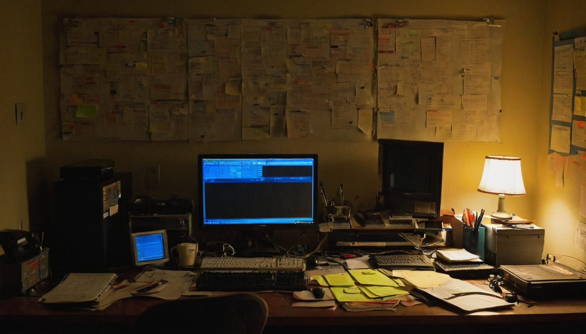
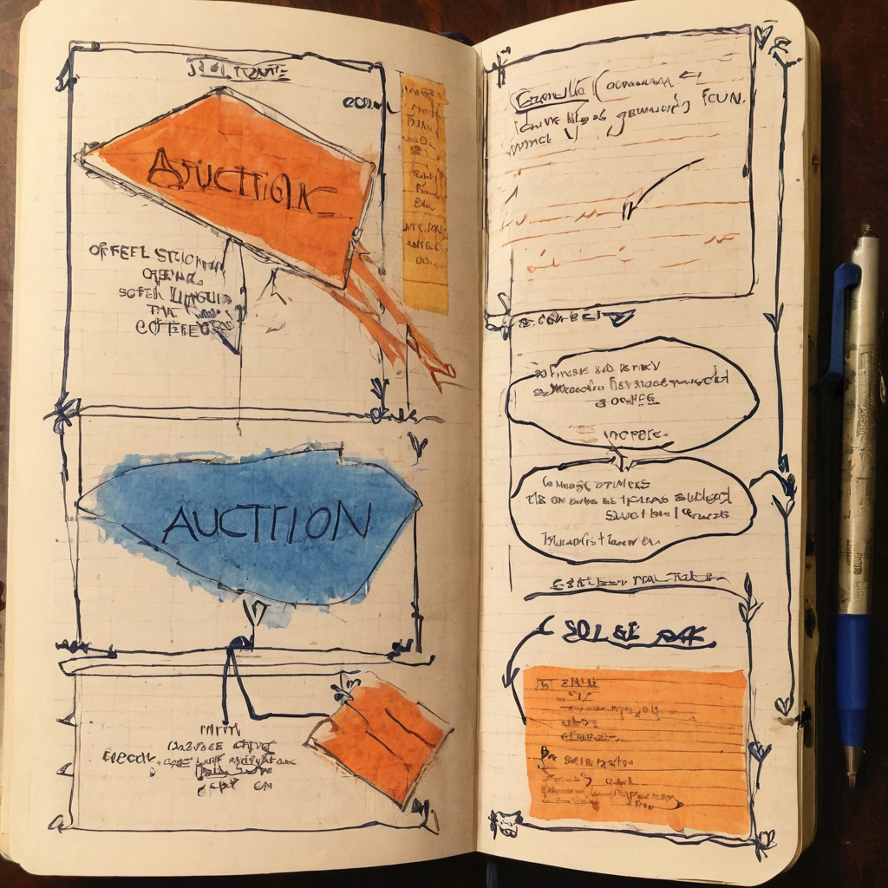

I stopped on this one because "first ever" is doing a lot of work in that post. When a protocol runs its first version of a mechanism, that is usually the moment worth paying attention to, not the tenth one. Circuit just ran its first surplus auction, and whether or not you hold either token involved, it is a small window into how the protocol actually manages itself day to day.
@Circuit_DAO posted that Circuit's first ever surplus auction had successfully concluded. The result: 50 BYC sold to the highest bidder for 10,000 CRT. The post also said more auctions would be held later that same day, July 15, starting at 5pm UTC. No external links were included, just the announcement itself.
Based on the post, BYC appears to be Circuit's stablecoin and CRT appears to be Circuit's own token, though the post does not spell out the full tokenomics, so I am not going to guess beyond what is shown here.

Surplus auctions are a pattern that shows up in a few DeFi protocols, most famously in MakerDAO's design, where a protocol that generates more of its stablecoin than it needs (through fees, interest, or collateral operations) periodically auctions that surplus off for its own governance or utility token. The idea is usually to keep the system balanced and to give the native token some real utility beyond speculation, since people have to actually spend it to win the auction.
I want to be upfront that the post does not explain Circuit's exact mechanism, so I am describing the general pattern this kind of auction usually follows, not confirming that Circuit's version works identically. But the shape of it, "surplus BYC sold for CRT," lines up with that general idea.
For the Chia ecosystem specifically, this matters because it is one more example of a Chia-native project building out real operational infrastructure rather than just issuing a token and hoping. Auctions, treasury management, and surplus mechanisms are the unglamorous plumbing that makes a protocol feel like an actual system instead of a pitch deck.
What it does: Converts protocol surplus (in this case BYC) into demand for the protocol's own token (CRT) through a competitive bidding process.
Who it helps: Anyone holding CRT who wants a functional reason for that token to matter, and anyone watching Circuit to see if its economic design holds up in practice rather than just on paper.
What still needs work: One auction is one data point. A single sale of 50 BYC for 10k CRT tells you almost nothing about long-term demand, pricing stability, or how often these surplus events happen. The real signal comes from watching several auctions in a row.
What I would test first: I would watch the next auction (the one scheduled for 5pm UTC the same day) and compare pricing and participation. Consistency across auctions is a much better indicator than a single successful one.
I like seeing Chia projects run real mechanisms instead of just talking about them. A surplus auction is a small thing on its face, 50 BYC for 10k CRT is not a headline number, but it means someone built the auction contract, someone tested it, and it actually cleared with a real bidder. That is the boring, necessary work that a lot of projects skip past. The one thing I would want to see more of is a track record, a handful of auctions back to back, so people can judge the mechanism instead of one clean result.
The next auctions were scheduled for later the same day, so if you want to see this in motion rather than read about it after the fact, that is the place to look. I would keep an eye on whether pricing stays consistent, whether participation grows, and whether Circuit shares any follow-up on how the surplus gets generated in the first place.
Source: X post by @Circuit_DAO, https://x.com/i/web/status/2077527775938801871, retrieved on 2026-07-15. External references: none included in the source post.